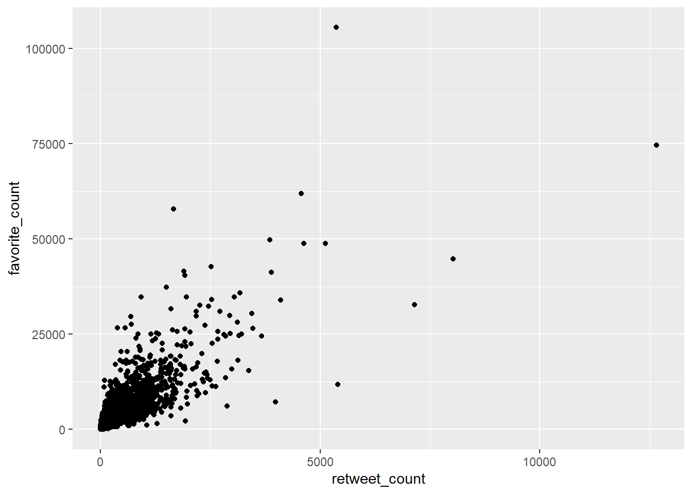

tweets |>
filter(!is_retweet) |>
ggplot() +
aes(x = retweet_count, y = favorite_count) +
geom_point()

Punktediagramme (Scatter Plots) zeigen die Beziehung zwischen zwei numerischen Variablen. Jede Beobachtung wird als Punkt dargestellt, wobei die Position durch die Werte der beiden Variablen bestimmt wird. Claus Wilke beschreibt sie als das wichtigste Werkzeug, um Zusammenhänge zwischen Variablen zu erkennen (Wilke 2019).
Gibt es einen Zusammenhang zwischen Retweets und Likes? Das lässt sich am schnellsten mit geom_point() prüfen:
tweets |>
filter(!is_retweet) |>
ggplot() +
aes(x = retweet_count, y = favorite_count) +
geom_point()Jeder Punkt ist ein Tweet. Die meisten Punkte kleben in der unteren linken Ecke, weil die Mehrheit der Tweets nur wenige Retweets und Likes bekommt. Ein paar Ausreißer stechen heraus.
Wenn viele Punkte übereinander liegen, seht ihr nicht, wie viele es tatsächlich sind. Es gibt mehrere Strategien:
Mit alpha macht ihr die Punkte halbtransparent. Dort, wo viele Punkte überlagern, wird es dunkler:
tweets |>
filter(!is_retweet) |>
ggplot() +
aes(x = retweet_count, y = favorite_count) +
geom_point(alpha = 0.2)geom_jitter() verschiebt die Punkte leicht zufällig, damit sie sich nicht exakt überlagern:
tweets |>
filter(!is_retweet) |>
ggplot() +
aes(x = retweet_count, y = favorite_count) +
geom_jitter(alpha = 0.2, width = 5, height = 5)Wenn die Daten stark rechtsschief verteilt sind (wenige sehr hohe Werte), hilft eine logarithmische Skala:
tweets |>
filter(!is_retweet, retweet_count > 0, favorite_count > 0) |>
ggplot() +
aes(x = retweet_count, y = favorite_count) +
geom_point(alpha = 0.2) +
scale_x_log10() +
scale_y_log10()Jetzt ist der Zusammenhang viel besser zu erkennen. Die Punkte verteilen sich gleichmäßiger, und ihr seht ein klares Muster.
Mit color könnt ihr eine dritte Variable einbringen:
tweets |>
filter(!is_retweet, retweet_count > 0, favorite_count > 0) |>
ggplot() +
aes(x = retweet_count, y = favorite_count, color = is_quote_status) +
geom_point(alpha = 0.3) +
scale_x_log10() +
scale_y_log10()
Neben Farbe könnt ihr auch die Größe der Punkte an eine Variable koppeln. Diesen Diagrammtyp nennt man Bubble Chart:
tweets |>
filter(!is_retweet) |>
group_by(screen_name) |>
summarise(
avg_retweets = mean(retweet_count, na.rm = TRUE),
avg_likes = mean(favorite_count, na.rm = TRUE),
tweet_count = n(),
.groups = "drop"
) |>
filter(tweet_count >= 5) |>
ggplot() +
aes(x = avg_retweets, y = avg_likes, size = tweet_count) +
geom_point(alpha = 0.5) +
scale_size_area(max_size = 10) +
labs(x = "Ø Retweets", y = "Ø Likes", size = "Tweets")scale_size_area() sorgt dafür, dass die Fläche proportional zum Wert ist, nicht der Radius. Das ist wichtig für eine korrekte visuelle Wahrnehmung (Wilke 2019).
Um einen Trend sichtbar zu machen, fügt ihr eine Glättungslinie mit geom_smooth() hinzu:
tweets |>
filter(!is_retweet, retweet_count > 0, favorite_count > 0) |>
ggplot() +
aes(x = retweet_count, y = favorite_count) +
geom_point(alpha = 0.1) +
geom_smooth() +
scale_x_log10() +
scale_y_log10()Standardmäßig nutzt geom_smooth() eine LOESS-Kurve. Für eine lineare Regression nutzt ihr method = "lm":
tweets |>
filter(!is_retweet, retweet_count > 0, favorite_count > 0) |>
ggplot() +
aes(x = retweet_count, y = favorite_count) +
geom_point(alpha = 0.1) +
geom_smooth(method = "lm") +
scale_x_log10() +
scale_y_log10()Punktediagramme sind für zwei numerische Variablen gedacht. Wenn eine Variable kategorial ist, nutzt Boxplots oder Violin-Plots statt Punkte.
Tausende Punkte ohne alpha oder Jitter erzeugen einen schwarzen Klecks. Nutzt immer mindestens Transparenz.
log10(0) ist -Inf. Filtert Nullwerte heraus, bevor ihr logarithmische Skalen verwendet.
geom_point() zeigt die Beziehung zwischen zwei numerischen Variablen.alpha, geom_jitter() oder logarithmische Skalen gegen Overplotting.color und size könnt ihr weitere Variablen einbringen (Bubble Charts).geom_smooth() zeigt Trends, mit method = "lm" als lineare Regression.